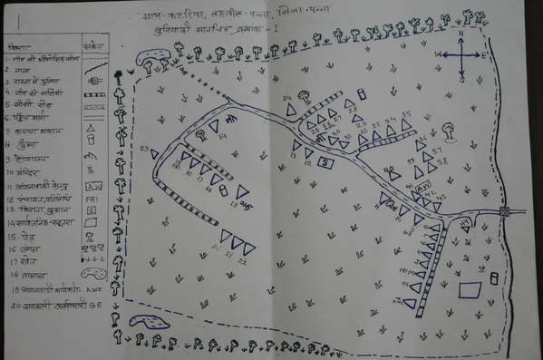

This site is to show data collected from various villages on the map of the respective village.
Select Village :
...
Kataria
Select the data-point :
Choose an option...
Number of Mobile
Social Class
Number of Children
Priority Class
